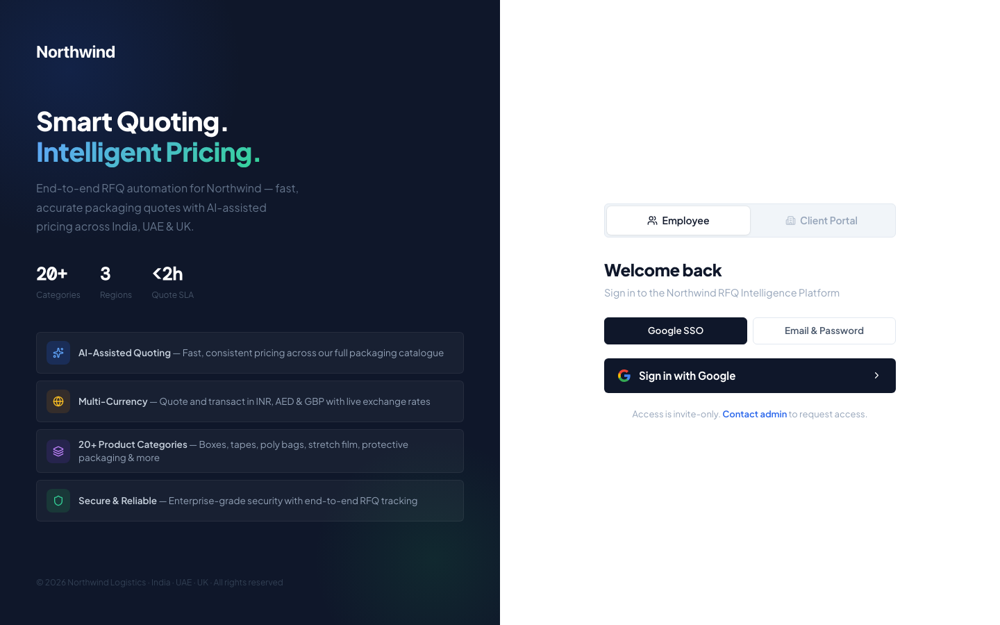
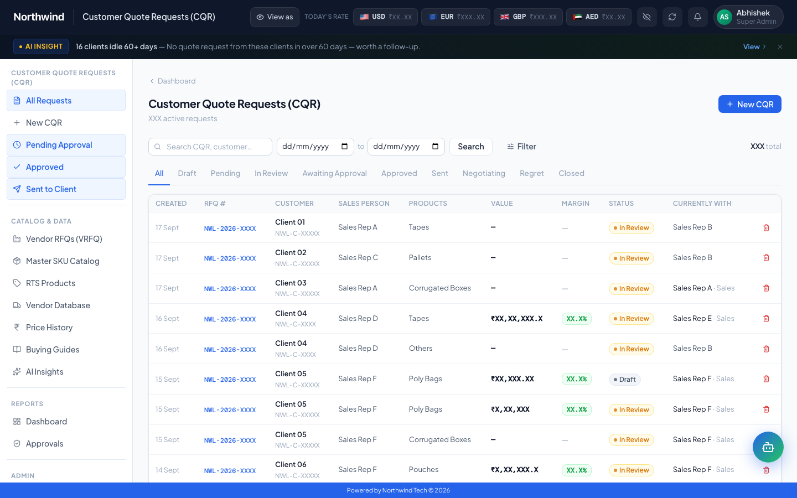
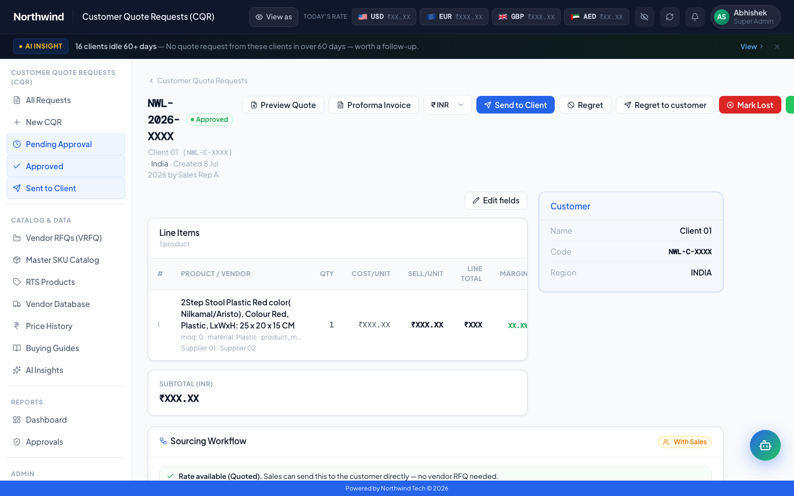
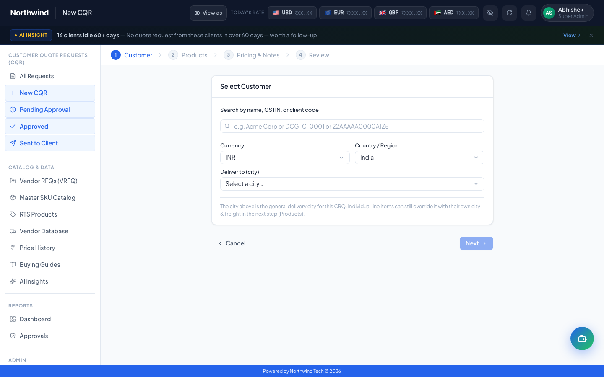
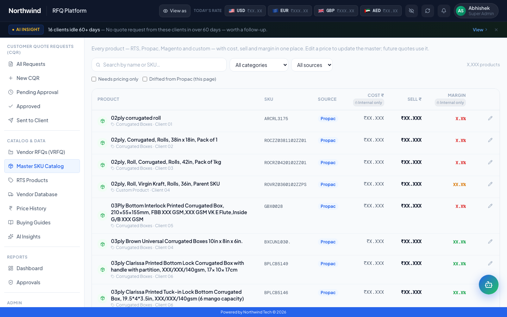
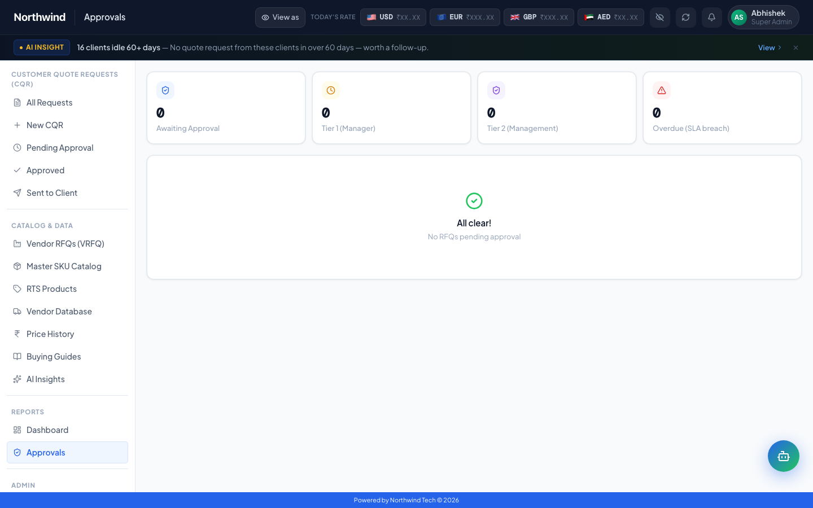
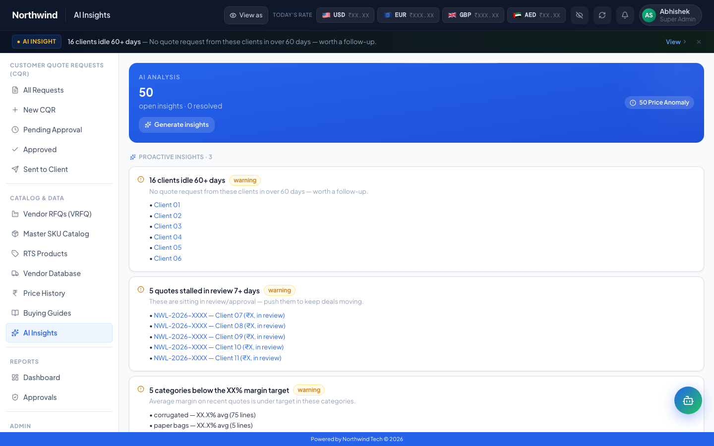
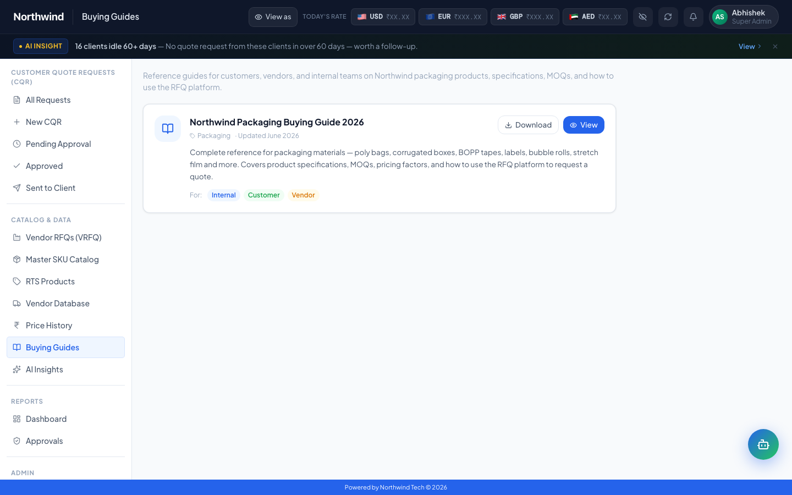

Quoting & pricing platform
RFQ & Pricing Platform
Replaced a spreadsheet-driven RFQ and quoting process with one platform: a canonical product data model, hierarchical markup pricing and an embedded AI pricing assistant.
Problem
Manual, spreadsheet-driven RFQ and quoting process across procurement and commercial teams — no canonical product data, no standard pricing logic, no approvals trail.
Approach
Ran discovery with commercial and procurement stakeholders; designed a canonical data model (36 sub-categories, 50 spec fields, ~7,900 SKUs); built hierarchical markup pricing logic (row → category → global fallback); shipped to AWS production.
- Replaced the manual quoting process end-to-end
- Embedded Q-Bot, an in-console AI pricing assistant
- Standardised markup logic across the commercial team
- Canonical data model was built first so pricing/approvals logic could sit on top of stable spec data instead of being hard-coded per SKU.
- Markup logic is hierarchical so teams can override case-by-case without breaking the default.
- Employee vs Client Portal login modes are split because internal quoting behaviour differs fundamentally from what an external client should see.
- Q-Bot is embedded in-console rather than a separate tool.
Live capture. The employer is shown under a fictional brand, Northwind Logistics. Business figures were masked with “X” and company and staff names swapped for generic labels (Client 01, Supplier 01, Sales Rep A) in the page itself, before the screenshot was taken. Nothing was cropped or blurred afterwards.
-

01Invite-only sign-in. Employees and clients enter through separate portal modes, because internal quoting and what a client sees are different jobs. -

02The commercial dashboard: quoted value, gross margin, active requests, pending approvals and progress against the FY target. -

03Every customer quote request in one list, with value, margin, status and who currently holds it. -

04Quote detail: cost, sell price and margin for each line item, next to the customer record and the sourcing workflow. -

05A new Customer Quote Request is a four-step flow: customer, products, pricing and notes, then review. -

06The master SKU catalog: every product with cost, sell price and margin in one place. Editing a price updates the master, so future quotes use it. -

07Approvals are tiered: manager (Tier 1), management (Tier 2) and SLA-breach tracking. This is the approvals trail the spreadsheets never had. -

08AI Insights flags idle clients, stalled quotes and categories below their margin target. -

09Buying guides give customers, vendors and internal teams one shared reference.
{kind=link}
{kind=link}
{kind=link}
{kind=link}
{kind=link}
{kind=link}
{kind=link}
{kind=link}